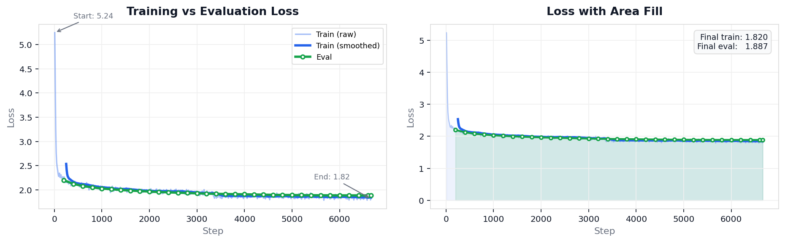
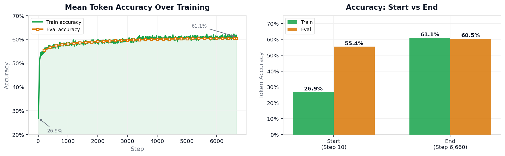
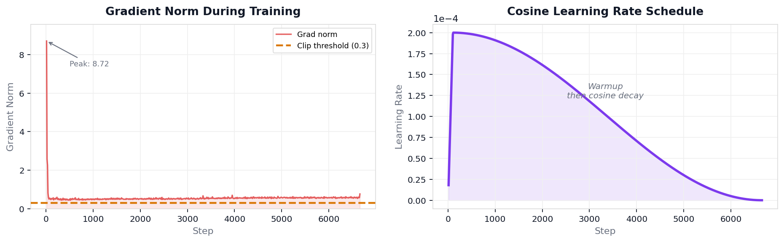
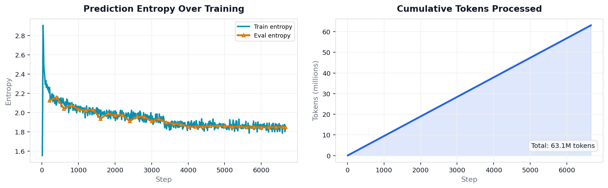
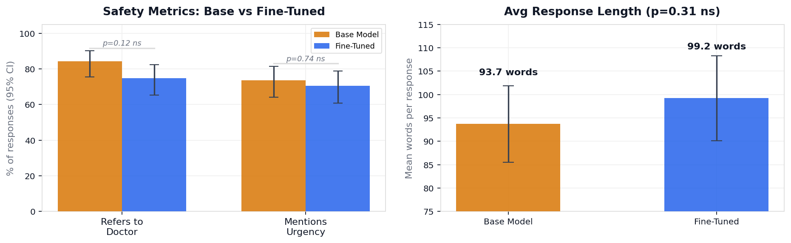
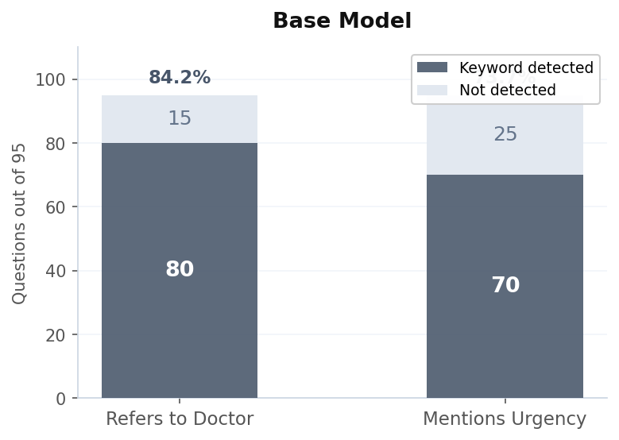
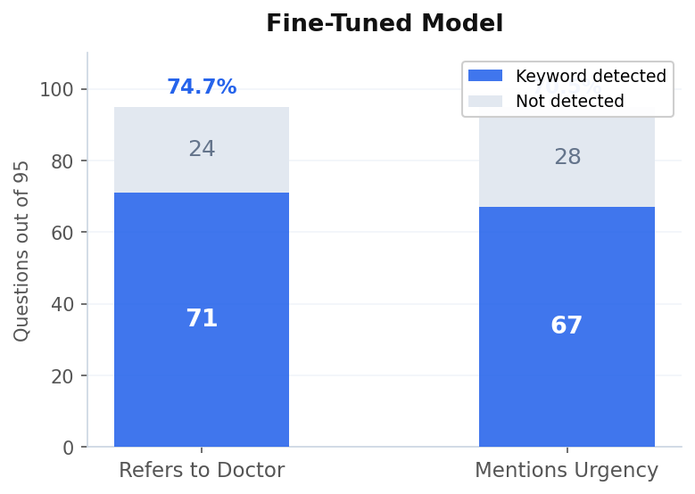

An AI assistant trained on 100,000 real doctor conversations to answer health questions the way a clinician communicates — structured, cautious, and consistent.
Fine-Tuning Gemma 3 on
100,000 Real Doctor Conversations
Building a domain-specific healthcare AI assistant using QLoRA, the ChatDoctor dataset, and a cloud H100 GPU — from raw CSV to deployed app in a single session.
Gemma 3 1B Instruct
QLoRA (LoRA + 4-bit quant)
100K patient‑doctor conversations
NVIDIA H100 80GB
~2.5 hours
13M / 1.01B (1.29%)
Key Terms
| Term | What it means |
|---|---|
| Fine-tuning | Taking an existing AI model and retraining it on new, specific examples to change how it behaves in a particular area — without starting from scratch. |
| Open-weight model | An AI model whose internal parameters are publicly available. Anyone can download, modify, and run it. |
| Parameters | The numerical values inside an AI model that determine how it responds to any input. This model has 1 billion of them. |
| LoRA adapter | A small 52MB file of trained weights that sits on top of an unchanged base model and steers its responses in a new direction. |
| QLoRA | A memory-efficient training method that compresses the base model's parameters during training so that it fits in GPU memory, while still allowing new layers to be trained on top. |
| Token | The smallest unit of text a language model processes — roughly a word or part of a word. |
| Loss | A number measuring how wrong the model's predictions are during training. Starts high, should fall as learning progresses. |
| GPU | A chip that can run many mathematical operations simultaneously — used for AI training because training involves billions of small calculations at once. |
| RLHF | Reinforcement Learning from Human Feedback. A training method where humans rate model outputs for quality and the model is trained to produce higher-rated responses. Used by Google and OpenAI to align their models. |
Executive Summary
This project fine-tuned a 1-billion-parameter open-weight language model — Gemma 3 (Google's publicly available language model whose weights are open, meaning anyone can download it, modify it, and train on top of it) — on 100,000 real patient-doctor conversations sourced from an online medical consultation platform. The goal was to teach the model to respond to health questions the way a clinician communicates: with appropriate structure, calibrated urgency, and consistent safety boundaries.
The training used QLoRA — a technique that works by first representing the original model's weights in a compressed numeric format that uses less GPU memory, then adding a small set of new trainable layers on top. The compressed base model's weights are locked and not updated — only the new layers learn. This means training requires far less memory than updating the entire model — and was completed in a single 2.5-hour cloud session. The model's prediction accuracy on clinical language improved from 26.9% to 61.1%. The trained result is the adapter — a 52MB file containing everything learned during fine-tuning; the original Gemma 3 model stays completely unchanged, and loading the adapter on top makes it behave as if trained from the ground up on medical data — deployed as a live web application on HuggingFace Spaces (a platform where AI researchers publish models and datasets publicly, similar to GitHub but built specifically for machine learning) that anyone can open in a browser.
A formal evaluation across 95 medical questions showed no statistically significant difference from the base model on keyword-based safety metrics. This was not a failure of the fine-tuning — it was a failure of the evaluation method. Keyword detection — a program that scans the model's response for specific words (such as “doctor” or “urgent”) and records whether they are present or absent, without reading or understanding the meaning of the response — cannot measure clinical accuracy, response structure, or tone calibration. The right evaluation framework — qualified medical professionals who read and score responses for clinical quality, accuracy, and appropriate safety boundaries (the same process used to train AI systems through human data labeling), or medical benchmarks like MedQA (a standardized set of medical licensing exam questions used to benchmark whether AI systems have factual medical knowledge) — is the primary next step.
“A headache with fever and neck stiffness can be caused by many things including tension headaches, flu, or dehydration. Make sure to drink plenty of fluids and rest. If symptoms persist more than a few days, consider seeing a doctor. Over-the-counter pain relievers like ibuprofen can help.”
Treats a potentially serious presentation like a minor inconvenience. No urgency communicated. Suggests ibuprofen.
“The combination you are describing — a headache lasting 3 days, difficulty touching your chin to your chest (called nuchal rigidity), and a fever of 38.9 C — is a specific clinical pattern that requires urgent medical evaluation. This triad of symptoms is one that doctors are trained to treat as time-sensitive. Please go to an emergency department today or call emergency services. Do not wait to see if it improves. Bring a note of when each symptom started and any medications you have taken.”
Identifies the clinical pattern by name. Communicates urgency clearly. Gives specific actionable instructions. Does not diagnose.
I wanted to build a healthcare AI assistant that actually behaves like a doctor. Not one that says “I'm not a doctor” and stops there, but one that understands symptoms, explains clinical patterns, and knows when something needs urgent attention — while never crossing into diagnosis.
General-purpose models are trained on internet text. They pick up the vocabulary of medicine but not the precision. They hallucinate drug names, miss urgency signals, and oscillate between being uselessly vague and dangerously specific.
The solution: retrain on top of 100,000 real patient-doctor conversations using a parameter-efficient retraining technique, on a rented high-performance GPU, and deploy the result as a live web app on a public AI model hosting platform.
The Problem with Generic Models on Clinical Questions
Ask a base model “What does a heart rate of 118 bpm with a temperature of 39.2 C suggest?” and it might confidently name a specific diagnosis it has no basis for asserting, cite a normal heart rate range that is slightly wrong, or miss the clinical pattern entirely and give a generic response.
The root cause is distribution mismatch. General models are trained on internet-scale text that is heavily weighted toward common health content and skewed by misinformation. They learn the language of medicine — not the precision of it.
What specifically fails — and what changes after fine-tuning
Confidently states medical facts that may be wrong, presenting guesses as established information.
Frames responses as patterns typically seen in clinical practice, not as definitive answers.
Misses warning signs when multiple symptoms together indicate something serious, treating them as separate minor complaints.
Identifies high-risk symptom combinations and explicitly flags them as time-sensitive.
States things like “this sounds like X condition” — making it sound like a diagnosis — without the examination or tests that would actually support one.
Says what a presentation is “consistent with” rather than naming a diagnosis, and explains why a doctor's evaluation is needed to confirm anything.
Tone varies unpredictably — sometimes alarming the reader unnecessarily, sometimes dismissing serious concerns.
Maintains a consistent, measured clinical tone calibrated to the described severity.
Inconsistent about when to recommend emergency care — the same symptom combination might get different urgency levels in different sessions.
Applies consistent thresholds — certain symptom combinations always trigger an urgent recommendation.
The Data — 100,000 Real Conversations Between Patients and Doctors
The training data is the ChatDoctor / HealthCareMagic dataset — 112,000 real patient-doctor conversations collected from an online medical consultation platform. No synthetic data. No Wikipedia abstracts. Real people describing real symptoms and real doctors answering them.
| Split | Examples | Purpose |
|---|---|---|
| Train | 106,548 | Model learning |
| Validation | 5,608 | Overfitting detection during training |
Data format
Each row has three columns:
- instruction — always “If you are a doctor, please answer...”
- input — the patient's question
- output — the doctor's response
Example conversation
# Raw row from the CSV
{
"instruction": "If you are a doctor, please answer the medical
questions based on the patient's description.",
"input": "I woke up this morning feeling the whole room is spinning
when I was sitting down. I went to the bathroom walking
unsteadily, as I tried to focus I feel nauseous...",
"output": "The most likely cause for your symptoms is benign
paroxysmal positional vertigo (BPPV), a type of peripheral
vertigo. In this condition, the most common symptom is
dizziness or giddiness, which is made worse with movements..."
}Why The Obvious Solutions Don’t Work
The tempting alternatives do not hold up under pressure.
Writing careful instructions at the start of every conversation — known as prompt engineering — can nudge a model toward safer behaviour, but it is brittle. A determined user, an unusual question, or a slight rephrasing can break it entirely. The model is following an instruction, not exhibiting learned behaviour.
Why a closed model like GPT-4 is not the answer
Using a more powerful closed model like GPT-4 creates three distinct problems for a healthcare deployment.
Privacy and data residency. Using a closed model requires sending every user question to an external company's servers. For most healthcare contexts, patient questions contain sensitive health information. Most hospitals and healthcare organizations cannot legally send this data to a third-party API without a specific data processing agreement. A fine-tuned open model can run entirely on the organization's own servers — patient data never leaves their infrastructure.
Inability to train on your own data. Closed models cannot be updated with your organization's clinical protocols, patient population patterns, or internal safety rules. The model you license is fixed. If your organization has a specific triage protocol, or serves a population with distinct health patterns, a closed model has no way to learn that. An open fine-tunable model can be trained on exactly the data and behaviour your organization needs.
Cost at production scale. At 10,000 patient queries per day, a GPT-4 API deployment costs roughly $50–200 per day depending on response length — adding up to $18,000–$73,000 per year before any other infrastructure costs. A fine-tuned open model running on rented GPU infrastructure costs a fraction of that at scale, and can eventually be self-hosted at near-zero marginal cost.
The only approach that makes the model’s behaviour genuinely reliable is training it on thousands of examples of the behaviour you want, until that behaviour becomes the default — not an instruction it is trying to follow.
Why These Specific Choices — And What Was Rejected
1. LoRA instead of full fine-tuning
Gemma 3 was trained by Google on an enormous amount of text — books, websites, scientific papers, medical literature — before this project ever started. It already understands anatomy, symptoms, medications, and how doctors write. That training cost millions of dollars and months of compute time.
The goal here was not to recreate that from scratch. It was to take everything Gemma already knew and teach it one additional thing: how to respond to a patient asking a health question in a way that is structured, appropriately cautious, and consistent.
That is a much smaller job. LoRA is designed for exactly this situation — when the foundation is already solid and you just need to build on top of it. Full fine-tuning would have been like demolishing a house to renovate the kitchen.
LoRA works by adding a small set of new layers on top of the frozen model — frozen meaning Gemma's original weights are locked and never changed. Those new layers are the only thing that gets trained, which is why the entire result fits into a 52 MB file rather than requiring a full copy of the model. Instead of retraining all 1 billion parameters, only 13 million — about 1.29% — were updated.
2. Gemma 3 1B Instruct
The 1B instruction-tuned variant was chosen for two reasons. First, iteration speed: training on the full 100K dataset takes 2.5 hours on an H100. For a first fine-tune on a new domain, being able to test a configuration, see whether the loss curve looks healthy, and adjust quickly is more valuable than raw model capacity.
Second, the -it (instruction-tuned) version was specifically chosen over
the base variant because it already knows how to hold a conversation. The fine-tune
adds medical domain knowledge on top of that foundation rather than having to
teach both simultaneously.
3. No 4-bit quantization
QLoRA typically applies 4-bit quantization — compressing the base model into less memory to make training feasible on consumer hardware. On an H100 with 80 GB of VRAM, a 1B model in bf16 (bfloat16 — a number storage format that uses half the memory of standard 32-bit format, without losing the numerical range needed to keep training stable) takes about 2 GB. There was no memory constraint to solve.
Quantization was explicitly rejected here because it adds numerical approximation to the base model's weights, which can degrade gradient quality during training. With 78 GB of unused VRAM, adding that complexity for no benefit would have been the wrong call. Full bf16 precision produces cleaner gradients and slightly better final model quality.
Data Pipeline
The raw CSV cannot go straight into training. Gemma 3 expects a specific chat template, and using the wrong format at training time means the model learns patterns it will never see at inference. Every conversation was reformatted into this structure:
Step 1 — Load and inspect
import pandas as pd
df = pd.read_csv("/workspace/Doctor-HealthCare-100k.csv")
print(f"Total rows: {len(df)}")
print(df.columns.tolist())
# Total rows: 112156
# ['instruction', 'input', 'output']Step 2 — Apply Gemma 3 chat template
SYSTEM_PROMPT = """You are a clinical health information assistant. \
You answer patient health questions clearly and carefully. \
You do not diagnose conditions or prescribe treatments. \
Always recommend consulting a real doctor for serious concerns."""
def format_row(row):
return (
f"<start_of_turn>user\n"
f"{SYSTEM_PROMPT}\n\n"
f"{row['input']}<end_of_turn>\n"
f"<start_of_turn>model\n"
f"{row['output']}<end_of_turn>"
)
df['text'] = df.apply(format_row, axis=1)
print("Done. Sample:")
print(df['text'][0])Step 3 — Train / validation split
from sklearn.model_selection import train_test_split
from datasets import Dataset
train_df, val_df = train_test_split(df, test_size=0.05, random_state=42)
print(f"Train: {len(train_df):,} | Val: {len(val_df):,}")
# Train: 106,548 | Val: 5,608
train_dataset = Dataset.from_pandas(train_df[['text']], preserve_index=False)
val_dataset = Dataset.from_pandas(val_df[['text']], preserve_index=False)How the Model Was Trained and Why It Converged
Training ran on a cloud H100 SXM via RunPod (a service that rents access to powerful GPUs by the hour), accessed through JupyterLab over SSH. The H100 — NVIDIA's most powerful data centre GPU, used by companies like OpenAI to train frontier models — has 80 GB of VRAM, which made the training timeline practical. The session ran for approximately 2.5 hours.
The code is built on PyTorch — the open-source software framework engineers use to build and train AI models, maintained by Meta — via the HuggingFace Transformers and PEFT libraries.
| Setting | Value |
|---|---|
| GPU | NVIDIA H100 80GB HBM3 |
| GPU utilization | ~94% |
| VRAM used | ~18.8 GB of 80 GB |
| Epochs | 2 |
| Batch size | 8 per device |
| Gradient accumulation | 4 steps → effective batch size 32 |
| Learning rate | 2e-4 with cosine decay |
| Optimizer | adamw_torch_fused |
| Precision | bf16 |
| Max sequence length | 512 tokens |
| Total optimizer steps | 6,660 |
| Tokens processed | ~64 million |
Model loading with QLoRA
import torch
from transformers import AutoTokenizer, AutoModelForCausalLM, BitsAndBytesConfig
from peft import LoraConfig, get_peft_model, TaskType, prepare_model_for_kbit_training
# 4-bit quantization (QLoRA)
bnb_config = BitsAndBytesConfig(
load_in_4bit=True,
bnb_4bit_quant_type="nf4",
bnb_4bit_compute_dtype=torch.bfloat16,
bnb_4bit_use_double_quant=True,
)
model = AutoModelForCausalLM.from_pretrained(
"google/gemma-3-1b-it",
quantization_config=bnb_config,
device_map="auto",
torch_dtype=torch.bfloat16,
)
model = prepare_model_for_kbit_training(model, use_gradient_checkpointing=True)
# LoRA adapters
lora_config = LoraConfig(
task_type=TaskType.CAUSAL_LM,
r=16, # rank — only 13M of 1B params become trainable
lora_alpha=32,
target_modules=["q_proj","k_proj","v_proj","o_proj",
"gate_proj","up_proj","down_proj"],
lora_dropout=0.05,
bias="none",
)
model = get_peft_model(model, lora_config)
model.print_trainable_parameters()
# trainable params: 13,045,760 || all params: 1,012,931,712 || trainable%: 1.2879Training loop
from trl import SFTTrainer, SFTConfig
trainer = SFTTrainer(
model=model,
train_dataset=train_dataset,
eval_dataset=val_dataset,
processing_class=tokenizer, # explicit — bypasses multimodal auto-detect
args=SFTConfig(
output_dir="/workspace/outputs",
num_train_epochs=2,
per_device_train_batch_size=8,
gradient_accumulation_steps=4, # effective batch = 32
gradient_checkpointing=True,
optim="adamw_torch_fused",
learning_rate=2e-4,
lr_scheduler_type="cosine",
warmup_steps=100,
max_grad_norm=0.3,
bf16=True,
logging_steps=10,
eval_strategy="steps",
eval_steps=200,
save_strategy="steps",
save_steps=200,
save_total_limit=2,
load_best_model_at_end=True,
dataset_text_field="text",
report_to="none",
),
)
trainer.train()Reading the Training Charts — What the Model Was Learning at Each Stage
All charts below come directly from TensorBoard — a live dashboard that plots training metrics as the model trains, so you can see in real time whether the model is learning or starting to go wrong — event logs exported from the RunPod session. These are real numbers from the actual run.
Loss curves
Both training loss and evaluation loss measure the same thing: the difference between what the model predicted and what the correct answer actually was. Training loss is measured on examples the model has seen; evaluation loss is measured on examples it has never been shown.
If training loss drops but evaluation loss rises, the model is memorising the specific wording of its training examples rather than learning general clinical patterns. It would perform well on training data but fail on any real patient question phrased differently. This is called overfitting.
In this run, both lines track closely together and trend downward throughout — dropping from 5.24 to 1.82 overall, a 65% reduction. Before training, a score of 5.24 meant the model was essentially guessing at what a clinical response looks like. The key signal: the green evaluation line and the blue training line moving together. If the green line had curved back upward while the blue kept falling, that would be overfitting and the model would need to be retrained. Them converging and declining together means the model is genuinely learning patterns that generalise — not just memorizing.

Token accuracy
When a model generates text, it is constantly predicting the next word-piece given everything before it. Token accuracy measures whether the word it chose matches what a doctor actually wrote in the training data — not just any fluent word, but the clinically appropriate one.
Random guessing from a medical vocabulary would score close to 0%. Reaching 61.1% means the model has internalized a significant portion of how doctors actually write — the right hedging phrases (“it is important to note that”), the right clinical terms (“nuchal rigidity,” “paroxysmal”), the right sentence structures. These are patterns a general model trained on internet text does not have.
The gap between training accuracy (61.1%) and evaluation accuracy (60.5%) is only 0.6 percentage points — extremely small. This means the model learned patterns that generalise to new examples it had never seen. It did not simply memorise the specific wording of the 106,548 training conversations.

Gradient norm and learning rate
During training, after each prediction, the model calculates how much it needs to adjust each of its parameters to make a better prediction next time. The gradient is the direction and size of that adjustment — it tells each parameter “increase slightly” or “decrease a lot.”
The gradient norm was high early (spiking to 8.7) because the model had almost no familiarity with clinical language. Every medical sentence it encountered was surprising, requiring large corrections to many parameters simultaneously. By the end it had stabilised at 0.76 — the model moving from “learning something completely new” to “refining what it has already learned.”
Without a maximum gradient limit, a single unusual batch of data could cause one enormous update that destroys previously learned behaviour. The clip threshold of 0.3 ensures no single training step can overwrite everything the model learned before it.
The cosine learning rate schedule starts at 2e-4 after a 100-step warmup and decays smoothly toward zero. Early updates are larger — exploring the learning landscape. Later updates are smaller and more precise — locking in what was learned. The warmup prevents large damaging updates at the very beginning when the model has not yet established stable patterns.

Entropy and tokens processed
Entropy measures how uncertain the model is about what word to say next. High entropy means many equally plausible options. Low entropy means very confident about the next word.
For example: if a model sees “Take two tablets with...” it might be very confident the next word is “water” or “food.” But if it sees “The patient presents with a 3-day history of...” it should be less certain — the next word could be “fever,” “chest pain,” “abdominal pain,” or dozens of other clinically plausible completions. A model that is too certain here is probably wrong.
Entropy rose slightly during training because early on the model was confident (using familiar general-English patterns) but wrong. As it began learning medical language, it recognised that the range of clinically appropriate next words was much wider and more specific than general text — and temporarily became less certain. A model that is very certain very early is usually memorising surface patterns rather than learning. The slight entropy rise followed by stabilisation shows the model was genuinely restructuring how it processes clinical text. The cumulative token counter confirms the model saw approximately 64 million tokens across both epochs.

Did It Work — What the Evaluation Showed and What It Could Not Show
Two safety behaviours were chosen as the primary evaluation metrics. “Refers to doctor” measures whether the model consistently recommended professional consultation — the most important safety behaviour for a healthcare assistant. “Mentions urgency” measures whether the model flagged time-sensitive situations as requiring immediate action rather than a scheduled appointment. These were chosen because they are the two behaviours most likely to affect patient outcomes if wrong.
They are also measurable automatically using keyword scanning — a program that scans the model's response for specific words (such as “doctor” or “urgent”) and records whether they are present or absent, without reading or understanding the meaning of the response. This can be run on hundreds of responses automatically. A human reviewer would be needed to assess whether the response was actually appropriate — not just whether the word appeared.
95 medical questions were run through both the base model and the fine-tuned model across 18 clinical categories. Each response was scored on these two binary safety metrics.
| Metric | Base Model | Fine-Tuned | Difference | p-value |
|---|---|---|---|---|
| Refers to doctor | 84.2% [75.6–90.2%] | 74.7% [65.2–82.4%] | −9.5 pp | 0.12 (ns) |
| Mentions urgency | 73.7% [64.0–81.5%] | 70.5% [60.7–78.8%] | −3.2 pp | 0.74 (ns) |
| Avg response length | 93.7 words | 99.2 words | +5.5 words | 0.31 (ns) |
95% confidence intervals shown in brackets — a way of saying how reliable a percentage is given the sample size; when two models have overlapping ranges like these, you cannot say one is genuinely better. McNemar's test (a statistical method for comparing two models tested on the exact same set of questions, which accounts for the fact that responses are paired) used for binary metrics. p-value (a number that tells you whether a difference is likely real or just random variation; above 0.05 means you cannot draw a firm conclusion from it) shown. ns = not statistically significant.
Was 95 questions enough?
95 questions across 18 clinical categories averages roughly 5 questions per category. With this sample size, the confidence intervals are wide — the true score could realistically be anywhere within a 15–17 percentage point range around each reported number. This means even a real difference of 10 percentage points between the two models might not appear statistically significant, because both confidence intervals overlap.
The “not significant” result here does not mean no difference exists — it may mean the study did not have enough test cases to detect a real difference that exists. This is called being underpowered. A more conclusive evaluation would use 300–500 questions per category (5,400–9,000 total for 18 categories), which would produce much narrower confidence intervals and potentially detect real differences the current study cannot confirm.

Where the models disagreed
Each chart below shows one model's keyword detection results across both metrics. The numbers show how many of the 95 questions each model detected the keyword in versus missed.


Why the base model scored higher on keywords
Keyword detection — a program that scans the model's response for specific words (such as “doctor” or “urgent”) and records whether they are present or absent, without reading or understanding the meaning of the response — answers one narrow question: does the word doctor appear somewhere in the response? It says nothing about whether the response is medically accurate, clinically structured, or appropriate for the severity of the presentation.
What keyword metrics measure
- Word presence / absence
- Surface-level safety signals
- Easy to automate at scale
What they cannot measure
- Medical terminology accuracy
- Clinical response structure
- Appropriate hedging and certainty
- Tone calibration to severity
- Non-diagnosis constraint internalised
A proper evaluation would require qualified medical professionals (doctors or nurses) who read the model's responses and score them for clinical quality, accuracy, and appropriate safety boundaries — the same process used to train AI systems through human data labeling. Alternatively, automated scoring against MedQA (a standardized set of medical licensing exam questions used to benchmark whether AI systems have factual medical knowledge — the AI equivalent of passing a medical board exam) or PubMedQA benchmarks. That is the primary next step.
What the Results Actually Mean
The evaluation results look like the fine-tuning failed. The base model scored higher on both safety keywords. That conclusion would be wrong, and understanding why it is wrong is more valuable than a clean win would have been.
Gemma 3 Instruct — the base model — was already fine-tuned by Google on an enormous instruction dataset using a process called RLHF (Reinforcement Learning from Human Feedback — a training technique where human raters score model responses for quality and safety, and the model is then trained to produce outputs that would score higher; it is how companies like Google and OpenAI align their models to be helpful and safe). That process deeply embedded safety language like “consult a doctor” into the model’s behaviour.
The outcome was predictable. Gemma 3 Instruct was already optimized by Google specifically to say things like “consult a doctor.” It already had deeply embedded safety language before this project began. Trying to shift that specific behaviour with 100K examples at a low LoRA rank is like trying to change someone's most deeply ingrained habits in one afternoon of coaching. The training metrics show learning happened — just not on the specific surface behaviour that keyword scanning measures.
What the training metrics show — loss dropping 65%, token accuracy improving from 26.9% to 61.1% — is that the model genuinely learned the distribution of clinical language. It learned how doctors structure explanations, how they calibrate urgency, how they hedge appropriately. Whether that learning translates into better real-world responses is a question keyword counting cannot answer.
This points to a known problem in ML evaluation: the metric you can measure easily is rarely the metric that matters.
Where this approach would show dramatically clearer results
The limitations of this run reveal a clearer picture of where fine-tuning like this delivers the most value. Consider a telehealth company building a triage assistant for their specific patient intake flow, or a pharmacy building a medication question bot. In those cases, the base model has zero knowledge of the company's protocols, product catalog, or clinical decision rules. There is no pre-existing RLHF behaviour to compete with.
Fine-tuning on even 5,000–10,000 examples of the company's desired behaviour would show large, measurable improvements — because you are teaching the model something entirely new, not trying to override something it was specifically trained to do. This is the use case where the technique is most powerful: domain-specific assistants where the base model starts with no relevant priors.
What Would It Take to Clearly Outperform the Base Model — An Honest Assessment
The honest answer is: more data alone is not the bottleneck. Gemma 3 1B Instruct was already fine-tuned by Google on an enormous instruction dataset with RLHF — it has very strong priors around safety language like “consult a doctor.” 100K examples at rank-16 LoRA is not enough to substantially shift those priors on keyword-measurable safety behaviour.
| Approach | Estimated examples | What changes |
|---|---|---|
| More data, same setup | 500K–1M conversations | Deeper domain fluency; safety keyword scores probably unchanged due to base model RLHF priors |
| LoRA rank r=64 | 200K conversations | More expressive adapter; starts to override base safety behaviour more effectively |
| Larger model + LoRA r=16 | 50K–100K conversations | Larger model adapts more efficiently per example; quality gap narrows much faster |
| DPO on preference pairs | 10K ranked pairs | Directly optimises for correctness rather than next-token prediction; most efficient path |
| RAG integration | No training needed | Provides authoritative clinical text at inference time; sidesteps memorisation entirely |
The training metrics — loss dropping from 5.24 to 1.82, accuracy improving from 26.9% to 61.1% — show the model genuinely learned clinical language patterns. Whether that translates to better real-world responses requires human evaluation or benchmark scoring against MedQA or PubMedQA.
What This Project Taught — Technical and Otherwise
Training metrics tell a story
Watching loss, grad norm, and accuracy evolve in real time made gradient descent concrete. When the grad norm spiked early and then stabilised, I understood exactly why — the model was making large initial corrections as it encountered clinical language for the first time, then finding a stable region of the loss landscape.
Cloud GPUs change what is possible
Running on an H100 reduced a potential multi-day training task to 2.5 hours. Knowing how to select, configure, and connect to a cloud GPU instance is now a practical skill. The pay-per-hour model makes experimentation genuinely accessible without owning enterprise hardware.
Remote infrastructure is a real skill
Setting up SSH access to a remote server, managing authentication keys, and working inside a JupyterLab environment over SSH are practical skills. Being able to connect, debug, and manage a remote training session is part of the job.
Honest evaluation is harder than training
Building the evaluation framework and interpreting the results correctly was the most intellectually demanding part. Knowing that keyword metrics are insufficient and understanding why is a more valuable skill than getting a high number.
What This Looks Like at Production Scale
A fine-tuned model deployed as a web application is a proof of concept. Making it trustworthy at scale is a different engineering problem entirely.
Three questions a production deployment has to answer: How do you catch the model when it hallucinates a drug name or gets a dosage range wrong before the user acts on it? How do you update the model’s knowledge when clinical guidelines change without retraining from scratch every time? How do you monitor for the pattern of cases where the model gives a confident response it should have escalated to a professional?
The architecture that answers these questions has three components. A retrieval layer — a system that pulls verified clinical reference documents into the model’s context at inference time, so responses can be grounded in sources rather than memorised training data. An automated evaluation pipeline that runs every response against a clinical fact database and flags discrepancies before they reach the user. And a feedback loop where flagged responses are reviewed, corrected, and fed back into the next training cycle.